PROCESO
- Paso 1.- Recortar el carton en diferentes piesas para aramar la estructura del basurero
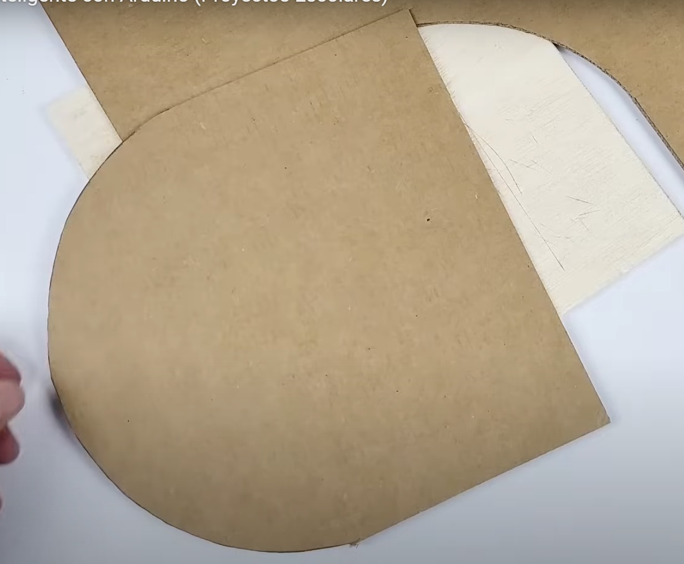
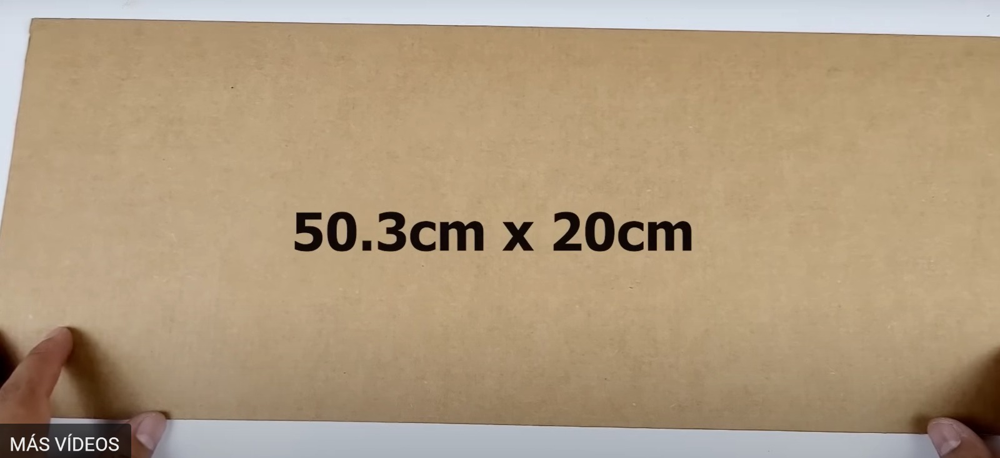
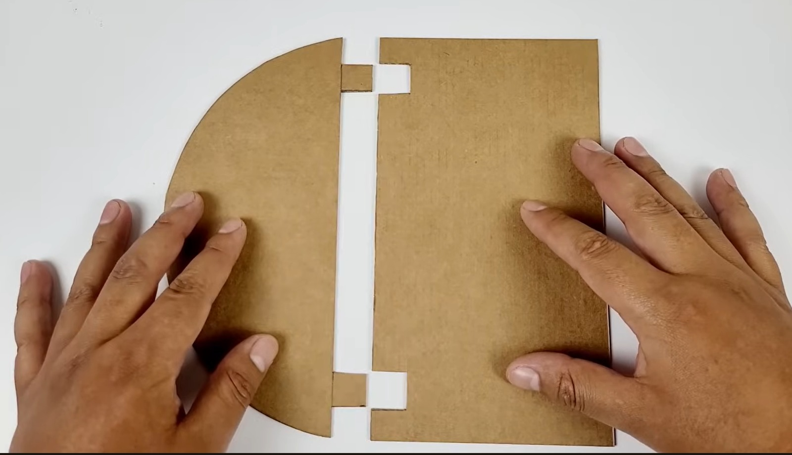
- Paso 2.- Unir y pegar las partes de la tapa con palo de madera delgado y silicona
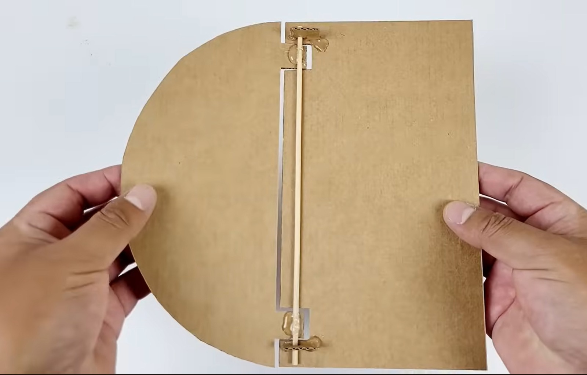
- Paso 3.- Colocar el servomotor sobre la tapa de carton y con un pequeño cable de cobre
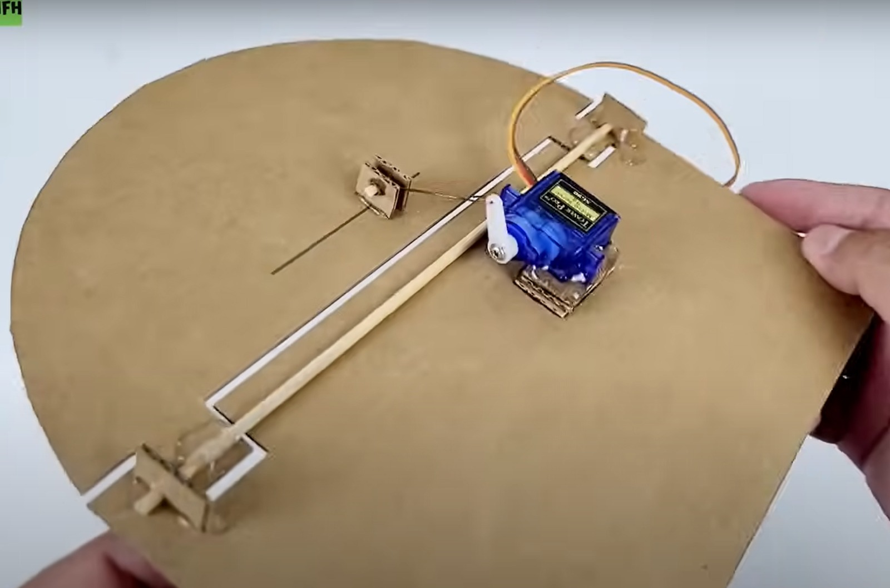
- Paso 4.- Realizar el codigo del funcionamiento del aldruino y cargarlo
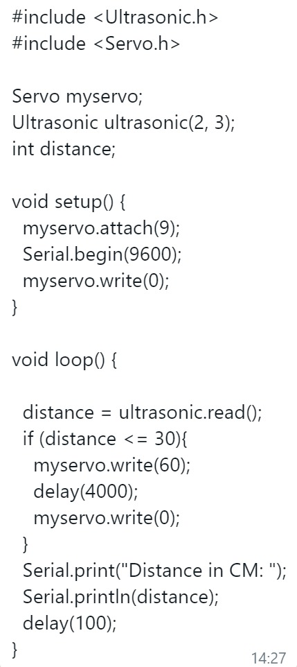
- Paso 5.- Pegar el aldruino nano en la tapa al lado del servo motor
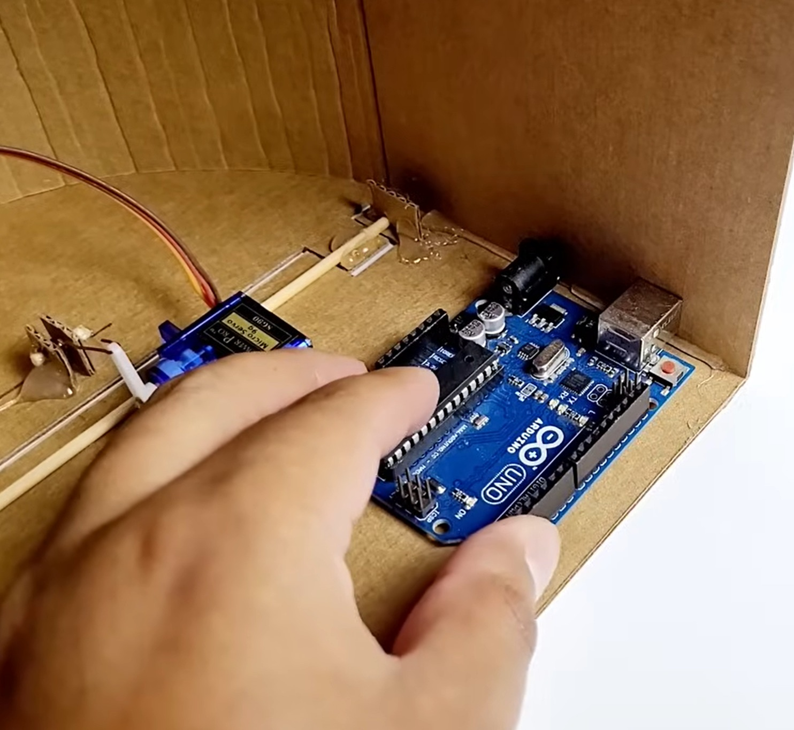
- Paso 6.- Pegar el sensorultrasonico en la base del basurero
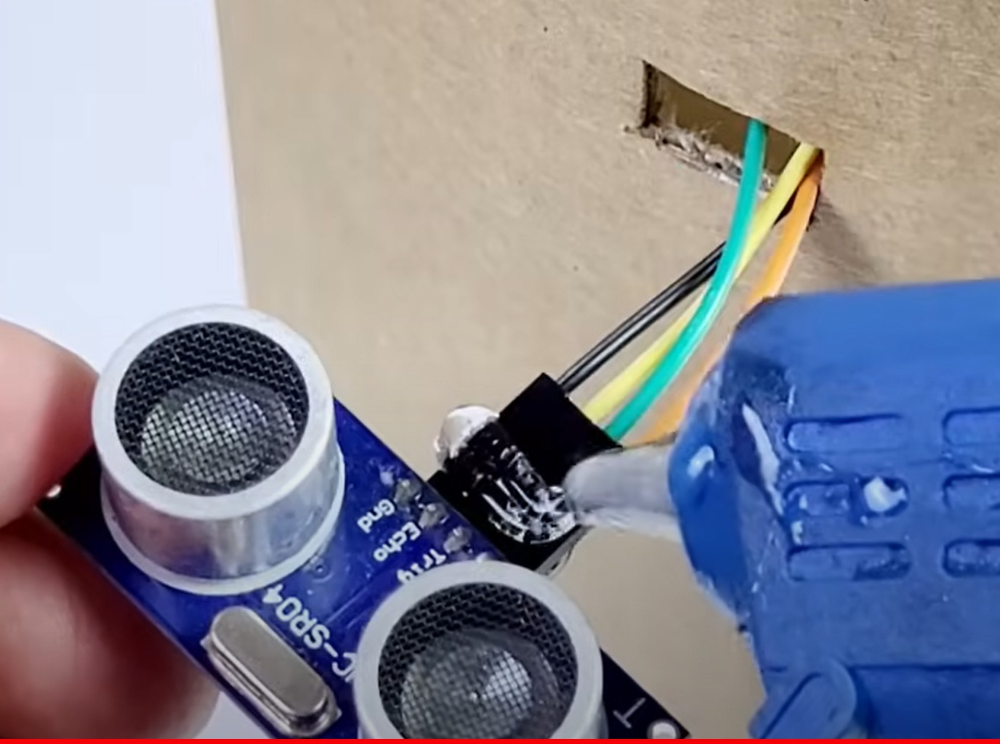
- Paso 7.- Unir todos los componentes con los jumpers y el protoboard a la base para comprobar su funcionamiento
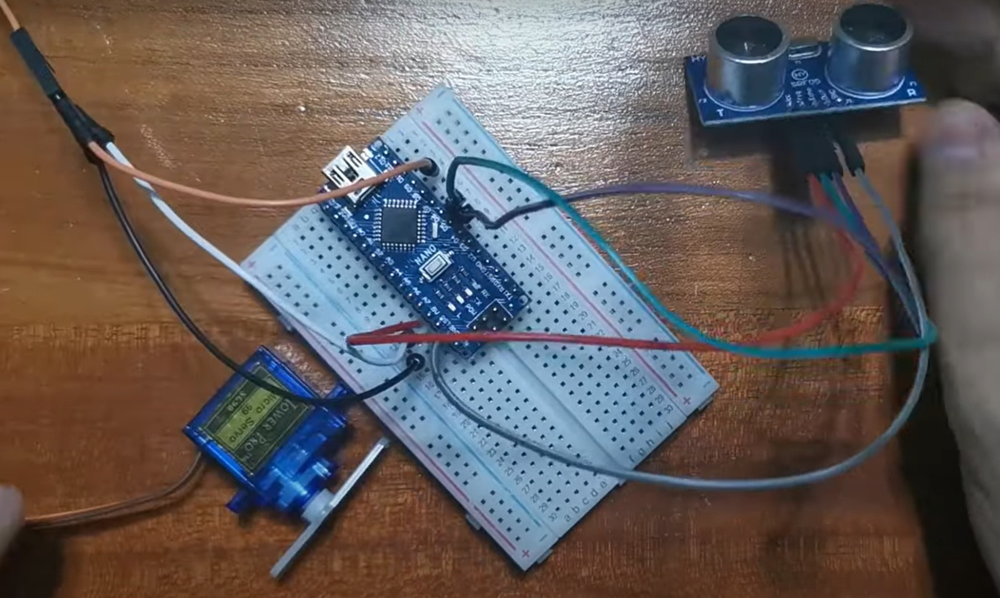
- Paso 8.- Pegar la tapa a la base del basurero y voolver a comprobar su funcionamiento
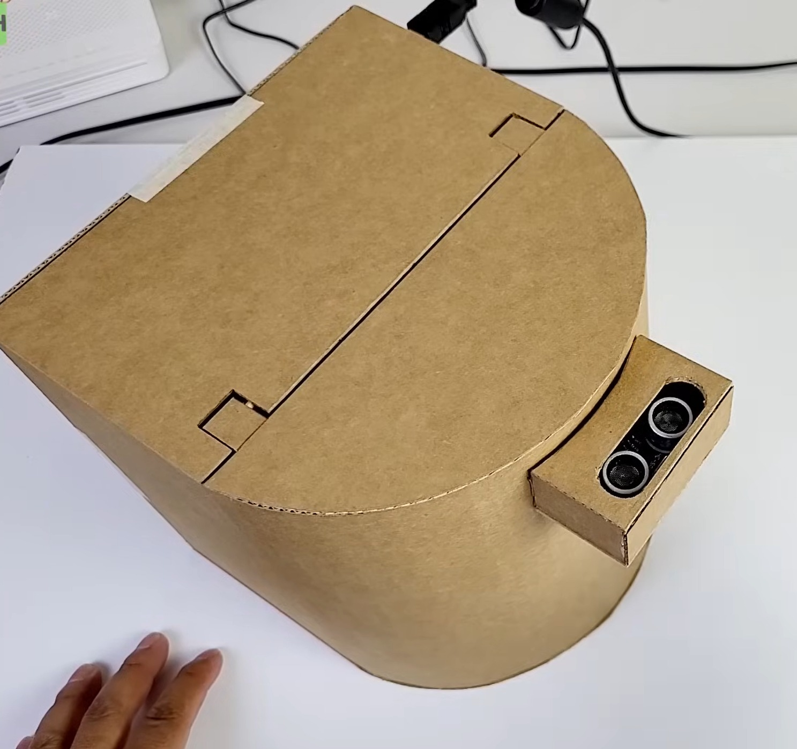
- Paso 9.- Una vez terminado el basurero decorar y pintar
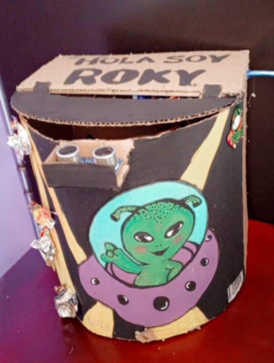